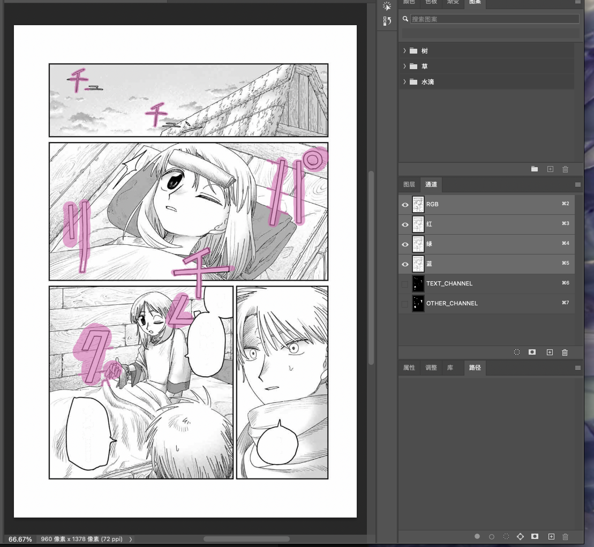
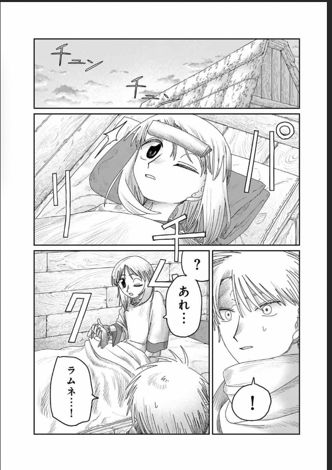
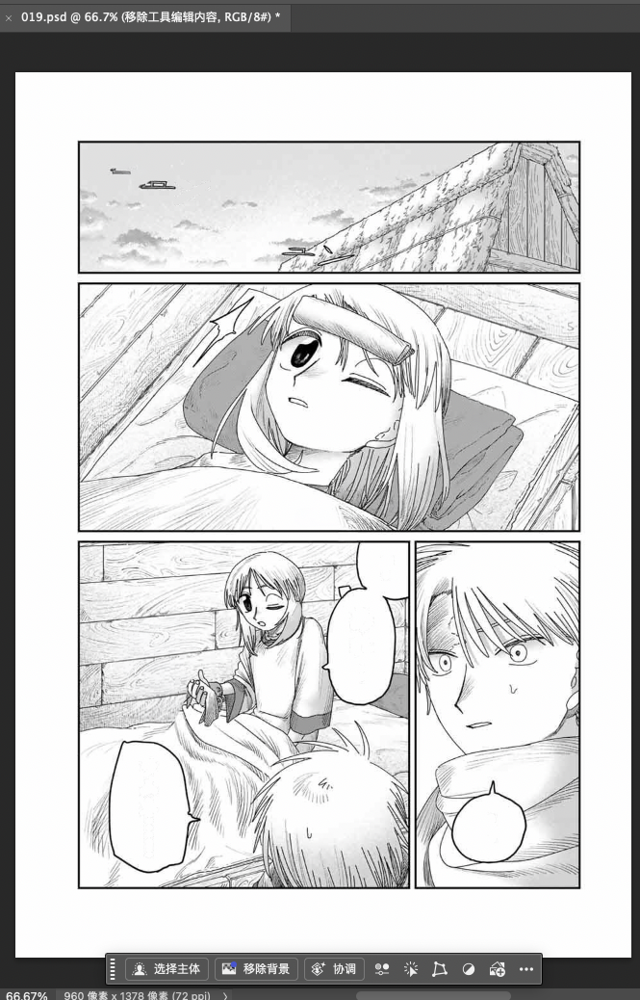
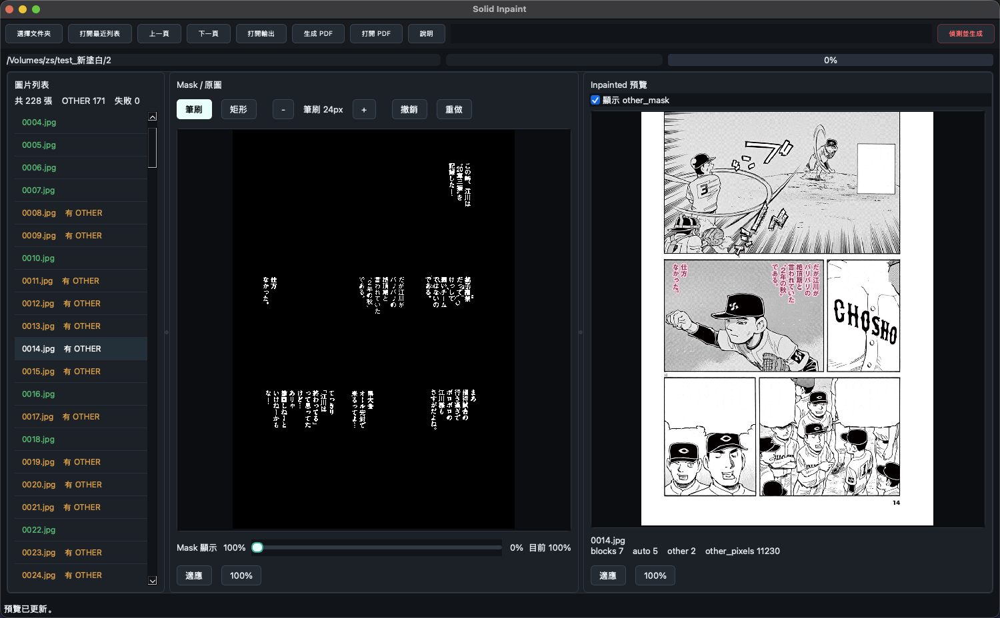
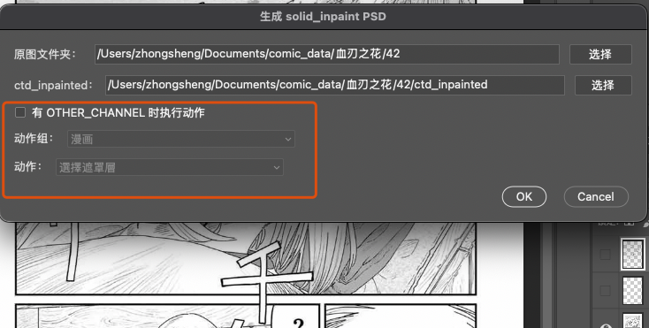
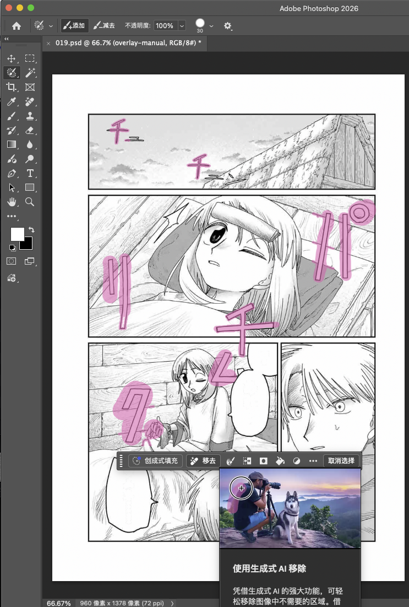

原圖層
保留原始漫畫頁。
漫畫批量去字工作流
Solid Inpaint 先處理能直接去字的純色背景，再用項目內 Photoshop 腳本生成 PSD。
不能直接去字的區域會保存到 OTHER_CHANNEL，可綁定 Photoshop 動作批量執行「AI 生成式移去」。

效果對比
純色背景由 Solid Inpaint 先處理；框外字、線稿、網點或複雜背景上的文字， 進 Photoshop 通道後交給生成式移去。


完整流程
選原圖資料夾，生成 ctd_inpainted。
在 Photoshop 執行 create_psds_from_outputs.jsx。
不能直接去字的部分進通道，作為 AI 移除選區。
有 OTHER_CHANNEL 時，自動執行你綁定的 Photoshop 動作。

PSD 腳本
腳本會建立 bg、overlay-manual，並保存
TEXT_CHANNEL 和 OTHER_CHANNEL。勾選動作後，遇到
OTHER_CHANNEL 的頁面就能自動執行 Photoshop 動作。

通道選區
PSD 會保留 OTHER_CHANNEL。這個通道可以被 Photoshop 動作轉成選區，
對框外字和複雜背景文字批量執行「生成式移去」。
保留原始漫畫頁。
純色背景文字先被自動覆蓋。
框外字、複雜背景文字交給 Photoshop 動作。
生成式移去
你可以錄好一個 Photoshop 動作：讀取 OTHER_CHANNEL 選區，執行生成式移去， 再交給 JSX 腳本在一批 PSD 上自動執行。

如何開始
首次啟動會建立 Python 環境、安裝依賴並下載模型。
python3 bootstrap.py在 Photoshop 使用 File > Scripts > Browse...。
create_psds_from_outputs.jsx勾選「有 OTHER_CHANNEL 時執行動作」，選擇已錄好的 Photoshop 動作。
OTHER_CHANNEL -> AI 生成式移去